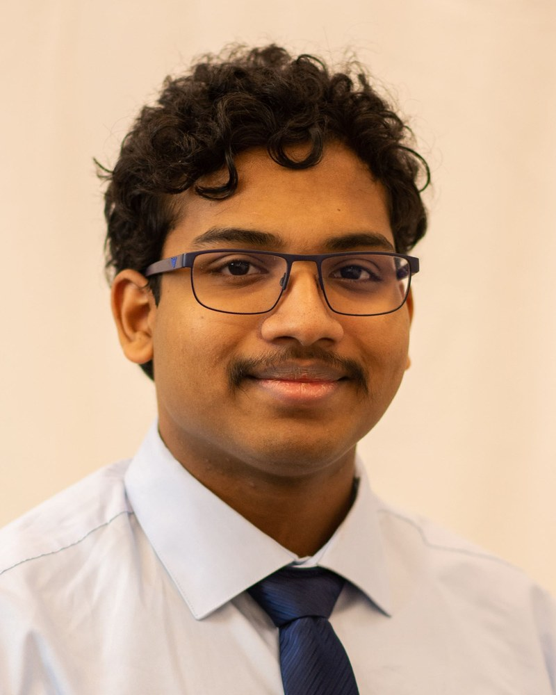
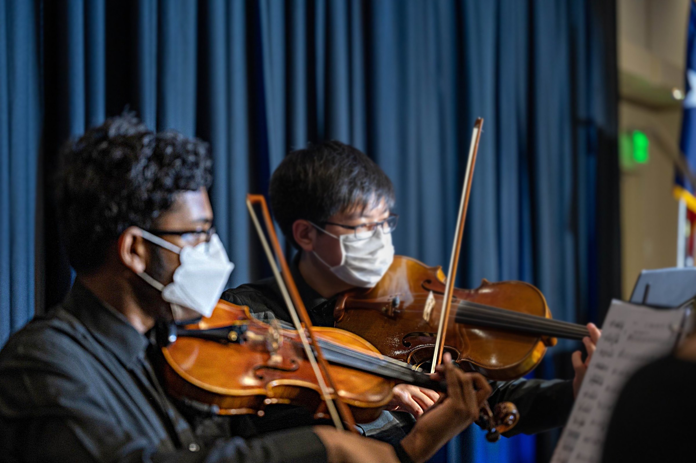

About me
I'm graduating from WPI with a BS in Robotics Engineering and a minor in Computer Science in May 2027, and an MS in Robotics Engineering in December 2027.
My interest in robotics started with my grandfather's cassette player and LEGO EV3 kits. I wanted to know how machines worked, and there's an old video of me at 2 years old working that cassette player to loop my favorite song. That curiosity carried me through twelve years of competitive robotics in FLL, FTC, FRC, VRC and VEX U.
At WPI it has turned into an interest in how robots perceive their surroundings, plan their motion and control it. The areas I want to keep working in are perception, motion planning, controls, AI and machine learning for robots, multi-robot systems, and medical and soft robotics.
I'm a U.S. permanent resident.
Coursework
Graduate: Robot Dynamics, Robot Control, Swarm Intelligence, Biomedical Robotics, Imaging for Medical Robotics.
Undergraduate: Unified Robotics I to IV, Control Engineering, Embedded Systems, Algorithms, Software Engineering, Object-Oriented Design, Intro to AI.
Outside class
I've been a member of, and led, teams from 5 to 165 people. On WPI VEX U I have held several roles over the years: secretary, marketing head/media lead, build lead, driver and programmer. Since my freshman year I've helped build and program robots for the team's most successful, record-setting seasons. Building two robots for the VEX U World Championship whose designs and match strategies complement each other is the challenge I enjoy most, and it's where my interest in multi-robot systems comes from.
Teaching and outreach have been a big part of robotics for me. In high school I helped organize more than sixty outreach and community events, mentored robotics teams, and taught STEM camps. As the Robotics Outreach Assistant with WPI Admissions, I organized robotics events, worked with FIRST and VEX/RECF, made Admissions content, and analyzed applicant and alumni data to plan outreach. I've also volunteered more than 400 hours at robotics competitions.
I play violin in orchestra at WPI, and did in high school.
